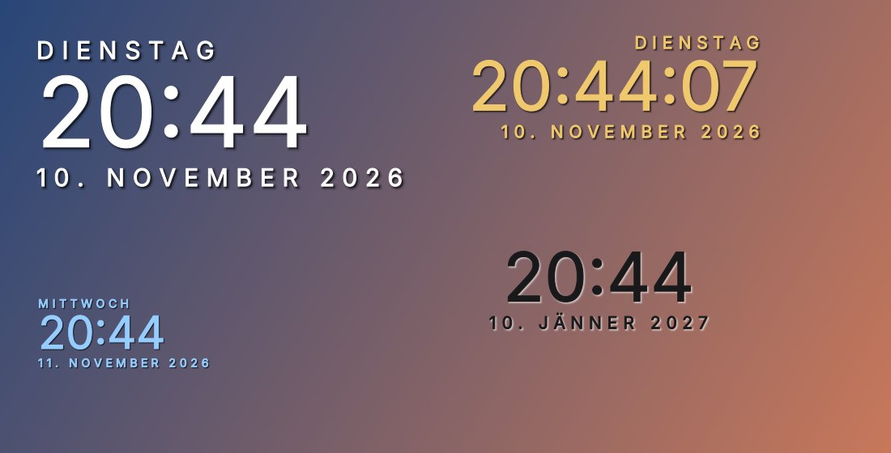
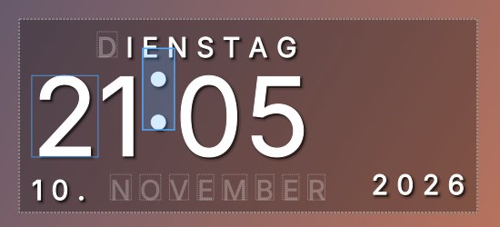

Kostenlos · Windows 10 & 11
Wochentag, Uhrzeit und Datum schön und durchsichtig direkt auf deinem Desktop, so wie mit Rainmeter, nur ohne Rainmeter. Jeder Buchstabe und jede Zahl lässt sich einzeln verschieben oder entfernen.

Alles über einen Rechtsklick auf die Uhr oder auf das Uhr-Symbol im Infobereich der Taskleiste.
Bleibt hinter deinen Fenstern, wie ein Teil des Hintergrunds. Auf Wunsch auch normal oder immer im Vordergrund.
Im Bearbeiten-Modus jeden Buchstaben und jede Ziffer verschieben oder entfernen, auch ganze Teile wie den Monat.
Vier Größen, sechs Farben, Deckkraft, Ausrichtung, Schatten, Sekunden und Wochentag ein- oder ausblenden.
Position und Einstellungen bleiben gespeichert. Startet auf Wunsch automatisch mit Windows.
Dauert keine Minute.
DesktopUhr am besten nach Dokumente legen und dort lassen.Desktop-Uhr starten.cmd doppelklicken. Kurz blitzt ein schwarzes Fenster auf, dann erscheint die Uhr oben rechts.Rechtsklick auf die Uhr, dann „Bearbeiten-Modus“. Entfernte Zeichen sind dort blass zu sehen und lassen sich wiederherstellen.
| Zeichen ziehen | einzelnen Buchstaben oder einzelne Zahl verschieben |
| Strg + ziehen | ganzen Teil verschieben (Wochentag, Uhrzeit, Tag, Monat, Jahr) |
| Anklicken + Entf | Zeichen entfernen |
| Strg + Entf | ganzen Teil entfernen |
| Pfeiltasten (mit Shift) | pixelgenau schieben (in 10er-Schritten) |
| Rechtsklick auf ein Zeichen | entfernen, wiederherstellen, Position zurücksetzen |
| Strg + Z | rückgängig |
| Esc | Bearbeiten beenden |

Eine selbst gebaute .exe ohne teure Signatur wird von Virenscannern oft fälschlich in Quarantäne geschoben. Die Uhr ist deshalb ein lesbares PowerShell-Skript, das Windows mit seinen eigenen Bordmitteln ausführt. Den kompletten Quellcode findest du im GitHub-Repository.
Rechtsklick auf das Uhr-Symbol im Infobereich der Taskleiste (unten rechts, eventuell hinter dem kleinen Pfeil), dann „Ebene“ auf „Normal“ stellen oder „Position zurücksetzen“ wählen.
Rechtsklick auf die Uhr, Haken bei „Mit Windows starten“ entfernen, dann „Beenden“. Danach den Ordner DesktopUhr löschen. Die Einstellungen liegen in %APPDATA%\DesktopUhr und können ebenfalls gelöscht werden.
Nur Windows 10 oder 11. PowerShell und .NET sind dort schon dabei, es muss nichts zusätzlich installiert werden.